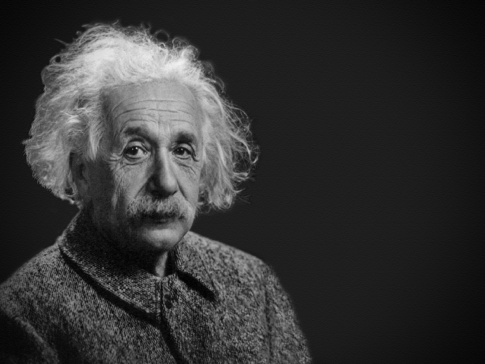

Albert Einstein
A man who changed the world

A timeline of Einstein's life:
1879:
Born to Hermann Einstein (a featherbed salesman) and his wife Pauline in Ulm, Germany.
1884:
Receives his first compass, inspiring a lifelong quest to investigate mysteries of the natural world.
1889:
Settles into a program of self-education at age 10 and begins reading as much about science as he can.
1894:
Stays in Munich to finish school, then follows his family to Italy.
1895:
Attempts to skip high school by taking an entrance exam to the Swiss Polytechnic but fails the arts portion.
1896:
Graduates from high school at age 17 and enrolls at the ETH in Zurich.
1898:
Falls in love with Mileva Maric, a Serbian classmate at the ETH.
1900:
Graduates from the ETH.
1901:
Becomes a Swiss citizen, finds work as a tutor. Maric gives birth to their daughter, Lieserl.
1902:
Takes a job at the Swiss Patent Office. His father, Hermann Einstein, passes away.
1903:
Marries Maric.
1904:
Birth of his son, Hans Albert.
1905:
Publishes five groundbreaking papers, introducing special relativity and E = mc².
1915:
Completes the general theory of relativity.
1921:
Wins the Nobel Prize in Physics.
1933:
Flees Nazi Germany and settles in Princeton, USA.
1939:
Writes a letter to President Roosevelt warning of Nazi nuclear research.
1940:
Becomes an American citizen.
1955:
Dies of heart failure on April 18.
If you have time, you should read more about this incredible human being on his
Wikipedia entry.